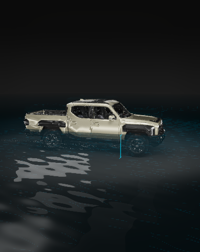
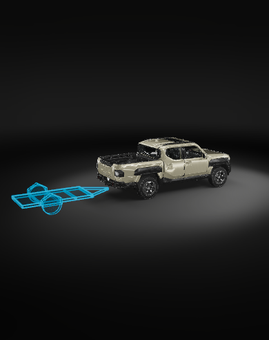
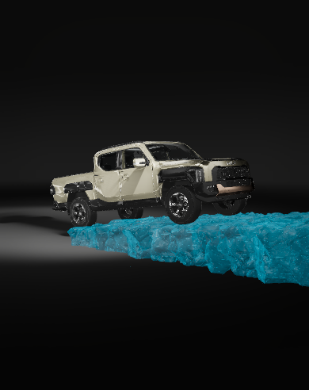
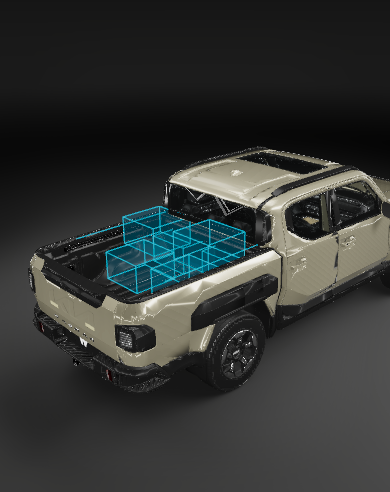

Capturas reales de PlayCanvas. La física usa parámetros nominales de presentación, no una calibración OEM. El agua procede de un solver de superficie libre 2D. Los clips de revisión se capturan con tiempo controlado y no representan los FPS de un teléfono.



